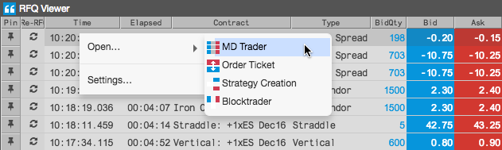

Click a cell in a bid or ask price or quantity column (BidQty, Bid, Ask, AskQty) in the RFQ Viewer to open a floating order entry widget, or click the button in the MDT column to open MD Trader.

You can also right-click a row in the viewer to open the context menu and click Open | MD Trader or Order Ticket.
